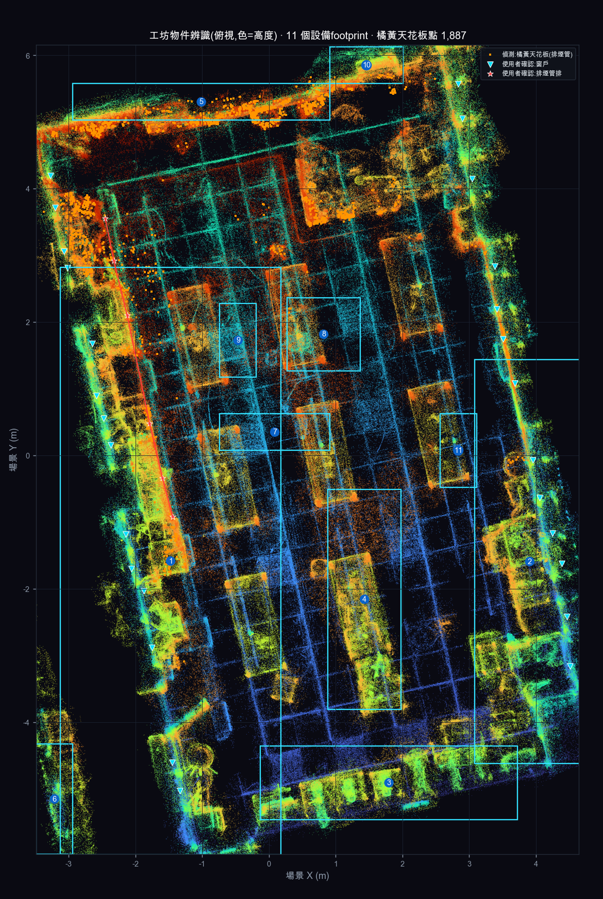
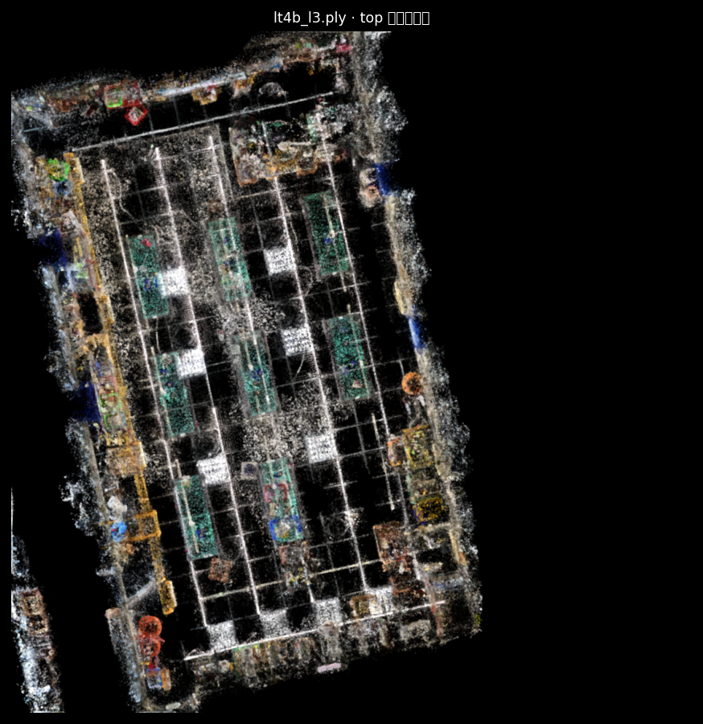
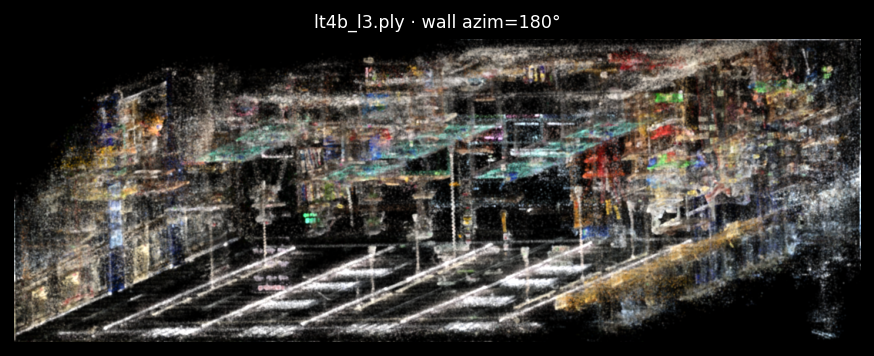
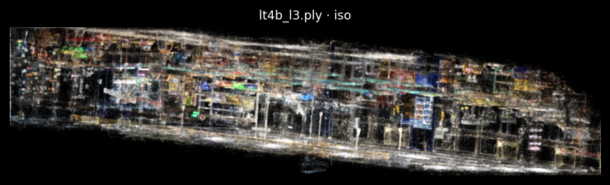

我(VLM)用 L3 去霧後的 3D 高斯算圖(俯視／牆面／等角)＋一支顏色+密度幾何偵測器，依外觀與位置自行辨識了房間、窗戶、排煙管與各設備。逐項標了信心，並老實標出哪裡我獨立辨識失敗。請幫我逐列點 ✅對／❌錯，錯的填一下正確答案，最後按「產生修正回覆」把結果貼回給我，我據此修正。
來源：lt4b（生活科技教室4）1,824,292 高斯座標：X(寬)×Y(此頁俯視縱軸=場景長軸)，高度另計




| # | 我的判讀 | 您的裁定 | |
|---|---|---|---|
| 房間 | 長方形工坊，約 8.1m(寬) × 12.1m(長) × 3.4m(高)；長軸沿南北。 〔信心高〕 | ||
| 窗牆 | 獨立辨識：左長牆(X≈−3) 與 右長牆(X≈+4) 各有一排、間距大致均勻的窗戶；與您點選的 27 個窗點吻合(同兩面牆)。但我無法從模糊算圖逐一獨立看出每扇窗，僅確認「兩長牆、成排、均勻」這個型態。 〔信心中〕 | ||
| 排煙管 | 用顏色自動找『橘黃＋貼天花板』點共 1887 顆，但只有 26% 落在您那排 0.6m 內(中位距 2.17m)→ 顏色自動辨識沒能乾淨鎖定排煙管(整片暖色天花板都偏橘)。排煙管位置以您的人工標註為準，我獨立確認失敗(誠實負結果)。 〔信心低〕 | ||
座標(X,Y) 為此頁俯視座標(公尺)；尺寸/高度為偵測值；主色來自高斯顏色(已被算圖洗淡，僅供參考)。同一「區」可能含不只一台。
| # | 位置/尺寸/主色 | 我的推測(含信心) | 您的裁定 |
|---|---|---|---|
| 1 | -1.47, -1.58 中央·3.3×8.8m·高0.16–0.6·灰/中性 |
中央主工作區：多張工作桌併排（分割時被連成一塊） 〔信心中〕 俯視最大區塊、貫穿中央長軸；牆面視角看到成排桌面（青綠水平帶）＋桌腳立柱。 |
|
| 2 | +3.91, -1.59 牆邊·1.65×6.05m·高0.16–0.6·灰/中性 |
右側長牆的設備／層架排 〔信心中〕 沿右窗牆一整條 6m，貼牆，像靠牆機具或收納層架。 |
|
| 3 | +1.80, -4.90 中央·3.85×1.1m·高0.21–0.6·灰/中性 |
底端(南牆)一排機台／桌 〔信心中〕 底部橫向一排，俯視有數個分立方塊，像沿牆的機器或工作桌。 |
|
| 4 | +1.43, -2.15 中央·1.1×3.3m·高0.16–0.6·灰/中性 |
中央一台較高的機具/桌 〔信心中低〕 中央獨立直立區塊、高度到 0.6 帶，可能單一機台。 |
|
| 5 | -1.01, +5.30 牆邊·3.85×0.55m·高0.34–0.6·白/亮 |
頂端(北牆)檯面/層架(亮白) 〔信心低〕 貼北牆、又薄又長、主色偏亮白，像檯面或白色櫃/層架。 |
|
| 6 | -3.21, -5.15 牆邊·0.55×1.65m·高0.22–0.6·藍 |
左下角落設備 〔信心低〕 角落小塊、主色偏藍，資訊少。 |
|
| 7 | +0.09, +0.35 中央·1.65×0.55m·高0.16–0.6·白/亮 |
中央小型機台/桌 〔信心低〕 中央小塊。 |
|
| 8 | +0.82, +1.82 中央·1.1×1.1m·高0.24–0.6·白/亮 |
中央機台/桌(亮) 〔信心低〕 中央、主色偏亮。 |
|
| 9 | -0.46, +1.73 中央·0.55×1.1m·高0.26–0.3·白/亮 |
中央矮桌/工作面 〔信心低〕 高度帶很矮(0.26–0.30)，可能只是桌面高度的一塊。 |
|
| 10 | +1.46, +5.85 牆邊·1.1×0.55m·高0.37–0.6·綠 |
北牆邊機台(綠) 〔信心低〕 貼北牆、主色偏綠。 |
|
| 11 | +2.84, +0.08 中央·0.55×1.1m·高0.18–0.6·藍 |
中右機台(藍) 〔信心低〕 中右一小塊、主色偏藍。 |